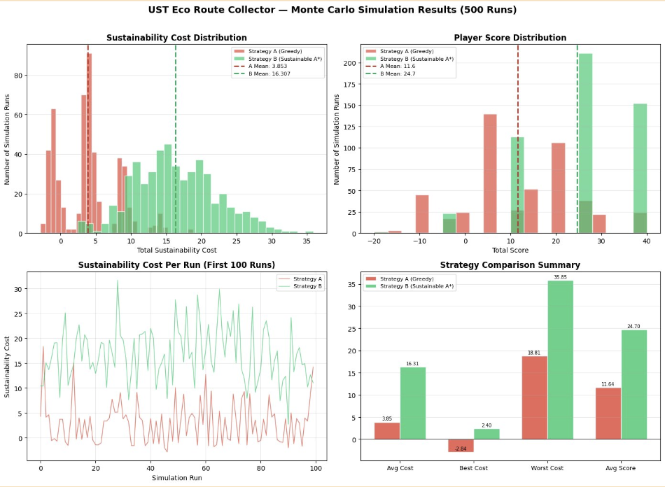
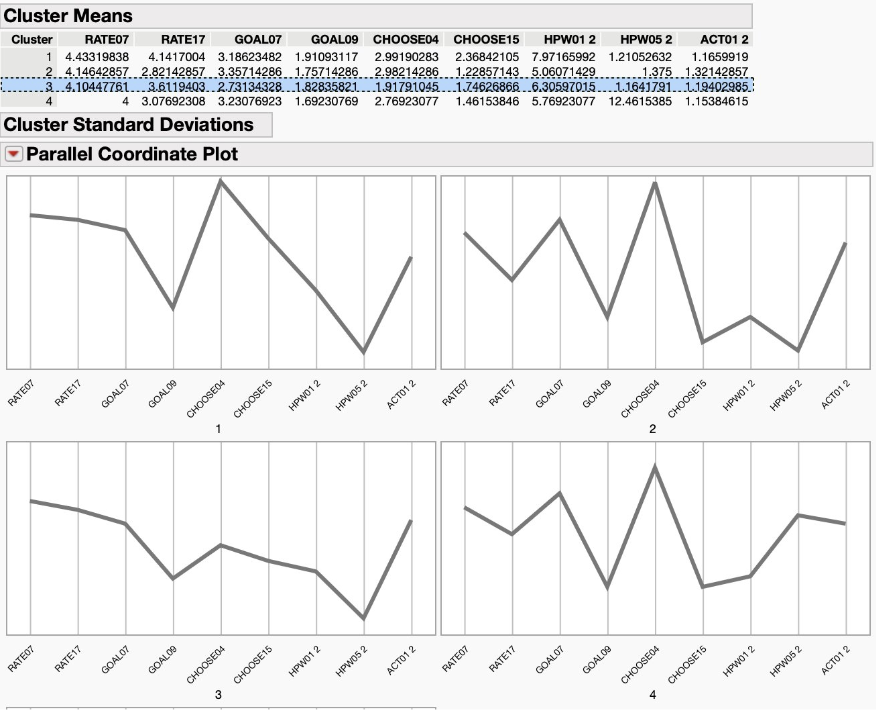
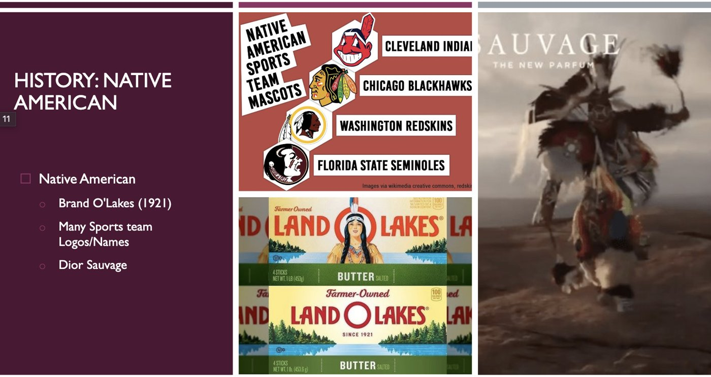

I'm a Computer Science major at the University of St. Thomas, a Dean's List student, and a member of the football team. I like turning messy information into something people can act on: dashboards, simulations, and tools that make a decision easier to understand.
My technical side is Python, SQL, Tableau, and Power BI, plus experience with AI coding tools such as Claude Code, Cursor, and GitHub Copilot. My communication and business coursework, my internships, and my work in client account support taught me the other half: asking what the audience actually needs, checking details carefully, and explaining results in plain language. I've worked with partners and stakeholders at the Minnesota Historical Society, Pace Mayo Manufacturing, and RBC Wealth Management, and with a team of four on a sustainability game for the St. Thomas Office of Sustainability.
What I bring to a team is that combination: I can build the analysis or the tool, and I can also make sure it is accurate, clear, and useful to the people who rely on it.
Description: A browser game where students make everyday decisions (move-in, move-out, a Sunday) and see how each choice affects sustainability. It is built with vanilla JavaScript, HTML, and CSS, and the story is stored in a JSON file so the team and the Office of Sustainability can change content without touching the game code.
My contribution: I designed and coded the scoring system and wrote the consequence messages for the move-in and move-out scenarios. I also fixed the ending-screen integration with my teammates' code and wrote the coding guidelines and user story slides for our team.
Situation
Our team of four was building a choose-your-path game for the Office of Sustainability, with each person owning a different piece: story, visuals, ending summaries, and scoring.
Obstacle
My scoring code had to work with code written by others and with branching paths of different lengths. When I connected it to the ending screen, the category didn't show because the ending screen was triggered too early by a placeholder block in a teammate's file.
Action
I traced the problem step by step, removed the placeholder trigger with my teammate's knowledge, and called the ending summary directly from the game logic when a path ended.
Result
The game now ends on the right screen and shows the player's sustainability category, and the scoring works for any branch the team adds.
Failure → Learning → Change
What I was trying to do: Build the first-draft scoring system for Demo 1, where each choice was ranked and the total decided the result.
What didn't go well: That version assumed every player answered the same number of questions in the same order. Once the team added branching, the totals weren't comparable between paths, so I had to rework it.
What I learned and do differently now: I now ask how a feature will connect to the rest of the system before I build it. I rebuilt the scoring around low, mid, and high levels and an average instead of a total, which works for paths of any length, and I check with teammates early before locking in a design.
AI-Based Sustainability Game: A* Search and Monte Carlo Simulation
Artificial Intelligence · Spring 2026 · Group project

Figure 2. Monte Carlo results over 500 runs: Strategy B (sustainable A*) vs. Strategy A (greedy).
Description: I built an A* search agent in Python that navigates a campus graph of 16 nodes and 42 edges and optimizes a sustainability-focused route. I then ran a Monte Carlo simulation of 500 runs comparing a greedy BFS strategy against the sustainable A* strategy under randomized energy and congestion conditions. The sustainable A* strategy scored more than double the greedy one on average (24.70 vs. 11.64) and had higher trivia accuracy (74.5% vs. 62.2%). Routing through LEED-certified green buildings also led players through locations where they answered trivia more accurately, so the campus's real sustainability infrastructure became a scoring advantage. A greedy approach finds routes faster but misses the sustainability rewards built into the campus graph.
My contribution: This was a group project. I built the A* search agent and the Monte Carlo simulation myself.
PythonA* searchMonte Carlo simulationgraph algorithmssustainability
CS / Technical · Data Science
The Culture of St. Thomas: Survey Analysis
Data Mining and Machine Learning · Spring 2026 · Group project

Figure 3. Cluster means and parallel coordinate plots for the four student clusters (JMP).
Description: I analyzed a survey dataset of 674 St. Thomas students to find indicators of college major selection, then used K-means clustering to group students into behavioral profiles based on study habits, religious engagement, financial goals, and academic performance.
Findings: The clusters were Ambitious Students (41.5%), who had the highest financial ambition and chose St. Thomas for its academic reputation; Faith-Driven Scholars (36.7%), who had the highest spirituality and most study hours and chose it for both faith and academics; Disengaged Students (19.9%), who had no strong pull toward the university's academics or mission and were the group most at risk for persistence; and a small outlier group (1.9%). Major choice differed across clusters, with Scholars leaning toward health and biological sciences, Ambitious Students toward business and engineering, and Disengaged Students toward education, humanities, and social science. A decision tree found that scientific-contribution goals (51.6%) and financial-success goals (28.9%) were the most important predictors of major, though its R² of 0.111 shows that survey variables only partly explain major choice.
My contribution: This was a group project. I ran the K-means clustering, built the decision tree, and made the charts.
PythonpandasK-means clusteringdecision treestatistical analysissurvey data
Non-CS · Communication (outside my major)
Cultural Appropriation in Marketing
Communication of Race, Class, and Gender · Spring 2025 · Group presentation

Figure 4. A slide from our presentation on Native American imagery in brands.
Description: Our group studied how brands use cultural imagery in advertising and where that becomes cultural appropriation. We looked at campaigns such as Land O'Lakes, which used Native American imagery, and Aunt Jemima, which used a Black stereotype. The main idea we explored is that appropriation often happens when brands "borrow" a culture without context, permission, or respect.
My contribution: I analyzed the public response to these campaigns and developed recommendations for how brands can communicate responsibly in the future, then presented my section to the class.
communicationmarketingrace, class, and gendercultural appropriationethicsresearch
Interdisciplinary · Business Internship
Data Modeling Analyst Intern, Pace Mayo Manufacturing
Apr 2026 – Aug 2026
Description: I worked independently on market research for a startup developing a sustainable building material by researching the market it was entering. My analysis combined data modeling with business strategy. This was my own project, and I presented the results to leadership.
Situation
A startup making a recycled-content plywood alternative needed to know where its product could compete.
Obstacle
The market had many unknowns: material weaknesses, competitors across countries, and which market to enter first.
Action
I used sourced pricing data to show plywood's weaknesses, including price volatility of more than 50% in a single year. I mapped a competitor landscape of 20+ companies across 11 countries, and I researched and sized the HVAC packaging market, a $524.9B global market.
Result
I identified HVAC and appliance packaging as an uncontested entry point for the recycled-content alternative and presented the findings to company leadership.
Description: I maintain accurate client account records in a regulated financial services environment. I process contact and account information updates and verify about 900 client accounts per week against account records before outbound mailings, which lowers the risk of misdirected or incorrect correspondence. My work keeps client data clean and current so advisors and operations teams can rely on it.
My contribution: This is an individual role. My responsibility is accuracy and meeting deadlines.
financial servicesdata accuracyattention to detailregulated environmentoperations